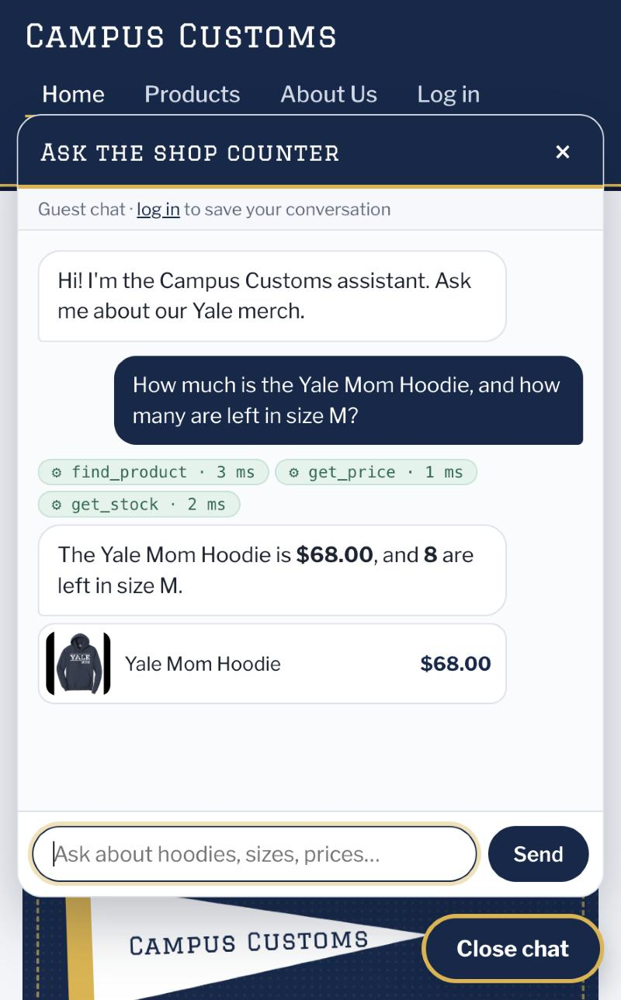
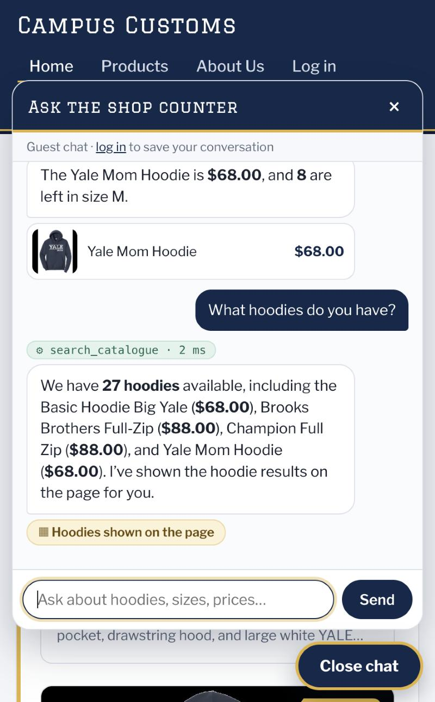
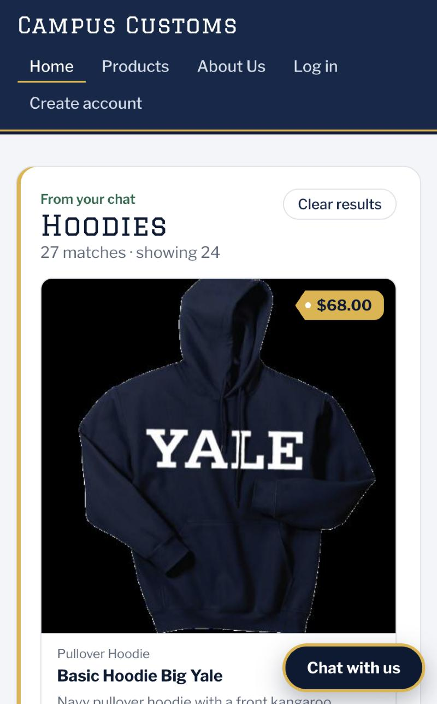
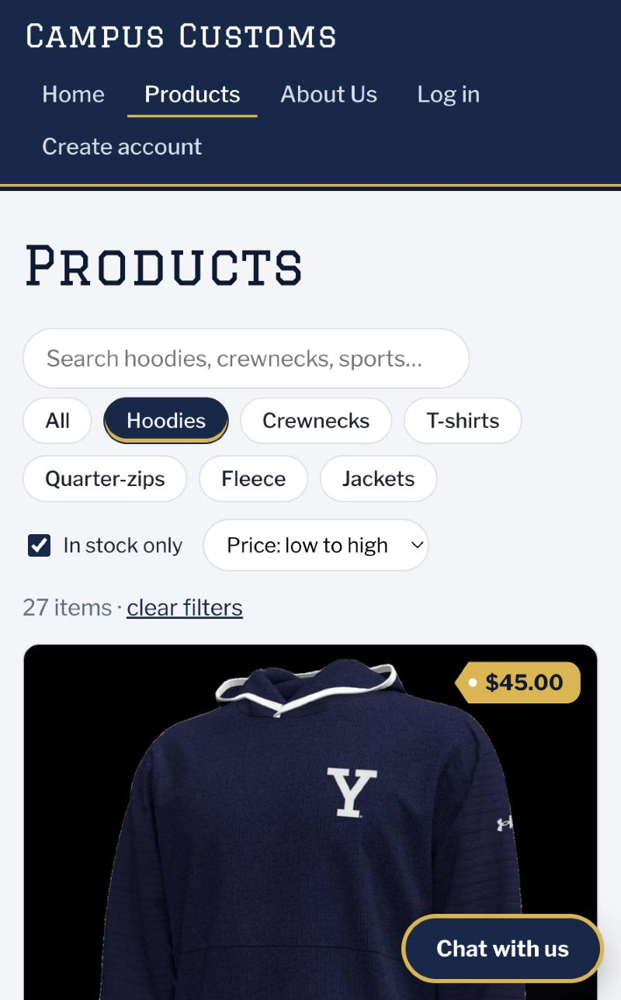

1. Chat checks inventory and price from the database
Requirement: the chat retrieves a product's actual inventory level and price from the DB.

The tool chips show the agent called find_product → get_price → get_stock, and its answer of $68.00 with 8 left in M matches the database exactly (catalogue.price = 68.0; inventory for yale-mom-hoodie, size M = 8).
2. Dynamic search cards after a category question
Requirement: matching product cards appear on the page after a category question such as hoodies.

search_catalogue, “27 hoodies”, plus the “Hoodies shown on the page” pill.
The agent returned structured page_results (product IDs from the search tool, turned into cards from the DB), and the front end rendered them as normal product cards with image, name, price and description. Each card links to its /products/:id detail page.
3. Problem 9 usability feature — product filters & sorting
Requirement: show one of the usability improvements from Problem 9 (see usability.md, front-end improvement 1).

/products?category=hoodie&sort=price_asc&instock=1.The Hoodies category chip, the In stock only toggle and the Price: low to high sort narrow 102 products to 27 hoodies, cheapest first (UA Gameday Double Knit Hood, $45.00). The filters are kept in the URL, so they survive Back and refresh.